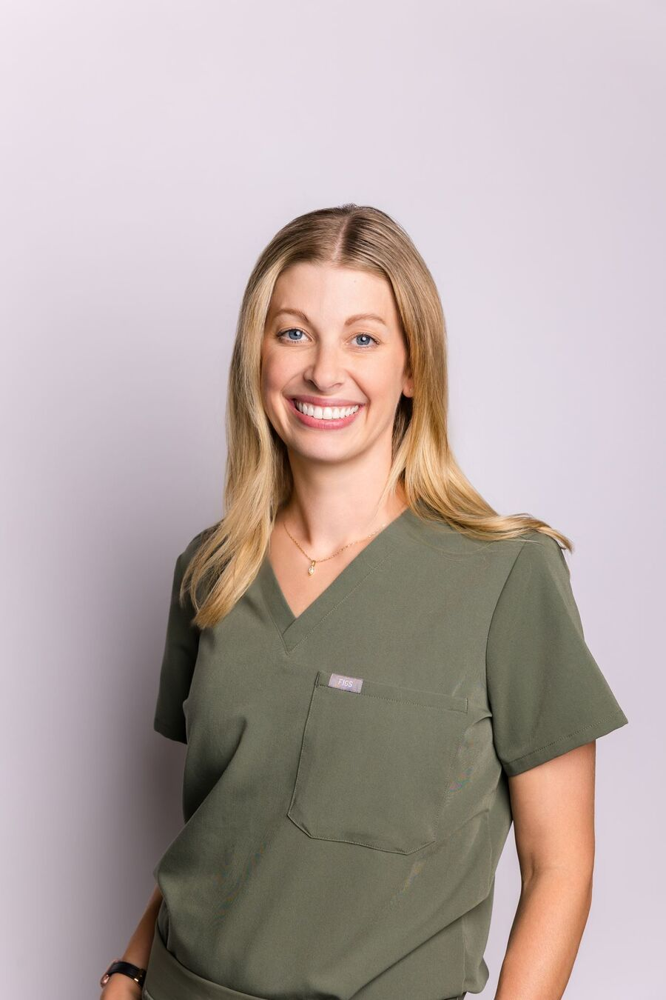
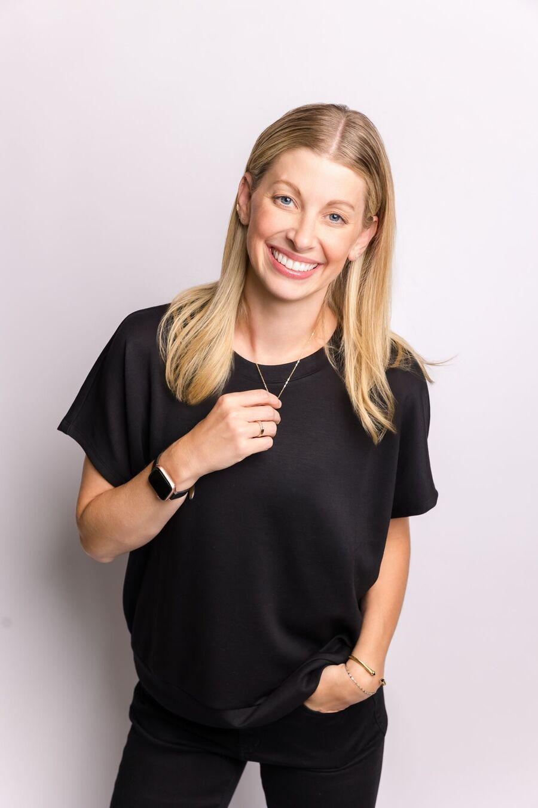

Dr. Lauren Kessinger
“No two days — and no two smiles — are ever the same.”
Raised in Northern Wisconsin, Dr. Kessinger studied at UW-Oshkosh and graduated from Missouri School of Dentistry and Oral Health in 2019. After working for a private practice in the St. Louis area, she came home in 2020 to join her parents at LPK.
- Clinical focus
- Invisalign
- Botox & dermal fillers
- Oral surgery & dental implants
- Root canal therapy
- Life in the Northwoods
- Husband Andy and five boys — Grayson, Liam, Colin, Oliver and Owen. Outside in every season, traveling, and at sporting events.
- Coffee order
- Iced vanilla latte, extra shot
- Favorite local spot
- Any dock at sunset
- Playlist in the office
- ’90s country
- Dream vacation
- New Zealand, all five boys in tow